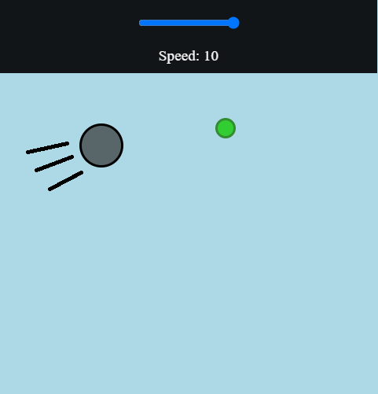
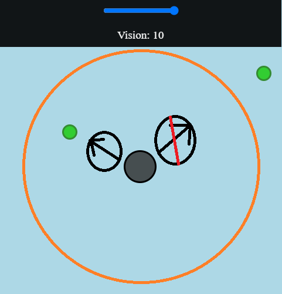
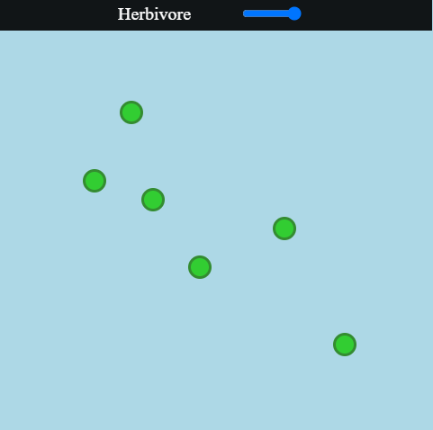

In evolution race, you want to help the cells to get back to their glory days.Every level has an objective that displays at the start.If you reach the certain goal, you win the level.
To play the level and help the cells, you must use the game panel in the top right corner. After you click the button, you will see that a menu appears.
There are some setting in that menu that you must use to win. The settings also update in real time so you can do smart plays, or better, change the color of your cells.Your cells divide automatically when they have enough energy.
Note that you can only use one trait at a time but you can use multiple sliders at the expense of points. The different traits represent the way for the cells to eat.
Transparency represents how much energy the cell has. If the cell is transparent, then it has less energy and will die soon if it will not eat.

The metabolism slider consumes points but reduces the energy that your cells lose, wich means that your cells don't need to eat as much to survive. This is very usefull, and you will use it and almost all of the levels.The higher you have the metabolism, the more cells you will have.

The speed slider consumes points but makes your cells move faster, wich means that your cells will eat things faster. This is very usefull, and you will use it in many levels.The higher you have the speed, the more things you can eat.

The vision slider consumes points but makes your cells see more, wich means that your cells will eat things farther away. This is very usefull, and you will use it in many levels.The higher you have the vision, the more things you can eat on the map.

The photosynthesis trait is the first one you will use and the most important one. If you ever see a light ray in the level, the photosynthesis trait is probably the way to go.
A light ray looks like a square and you must place the cells on it for them to use photosynthesis.

The herbivore trait is the second one you will use and one that you should not forget. If you ever see grass blobs in the level, the herbivore trait is probably the way to go.
A grass blob looks like a cell but it's smaller and always green. Your cells target grass blobs automatically on this setting, but only if they have the vision to see them.

The carnivore trait is the last one you will use and one that you should keep in mind. If you ever see other cells in the level, the carnivore trait is probably a good way to win the level.
Other cells look like your cell but they are smaller and always red. Your cells target "bad" cells automatically on this setting, but only if they have the vision to see them. Keep in mind that these cells run away if they are chased